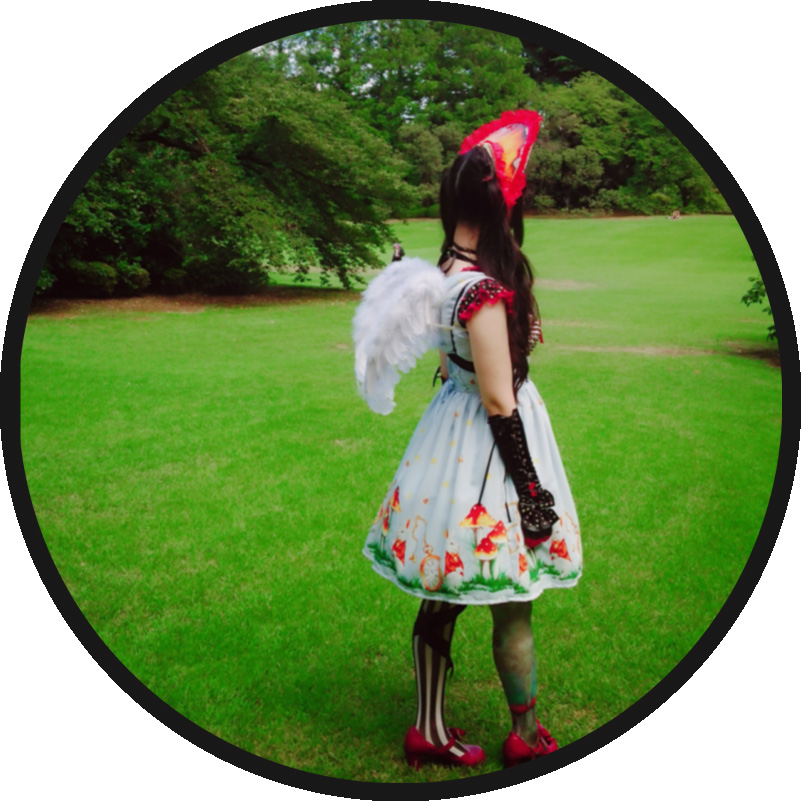

Michiyo Kurihara

初めまして。栗原 典世と申します。
デザイン、コーディング、プログラミング等Web制作に携わる仕事に就きたいと思っております。
「for」は〜を目指してという意味、
「est!」とはイタリア語であった！探しているものを見つけた。という意味があるそうです。
たくさんの人材、作品（森＝forest）の中から、見つけた！という意味を目指して「for est!」という言葉遊びなタイトルにしています。
実はこんな意味があったとは...と思っていただけるようなサイト作りを心がけています。
Skill

HTML5
- セマンティック要素によるページの構造の明確化
- 見出し要素の適切な利用
- HTML Living Standardの仕様に準拠したページ構造の定義

CSS3
- クラスベースのセレクタ設計
- メディアクエリによるレスポンシブWebデザイン
- フレックスボックスとグリッドによるレイアウト構築
- トランジションとキーフレームアニメーション
- Google拡張機能「PerfectPixel」を利用したピクセルパーフェクトスタイリング
JavaScript
- DOM操作
- 条件分岐
- 配列とループ処理
- イベント処理
- 画像のスライドショーやモーダルウィンドウ、アラート表示等インタラクティブな機能を実装

Figma
- 画像エクスポート
- Figmaによるデザインカンプ作成
- プロトタイプの確認
- Figmaによるデザインカンプを基にHTMLとCSSの設計

Photoshop
- Photoshopのインストール
- 画像切り抜き拡大縮小
- バナー制作

Visual Studio Code
- Visual Studio Codeのインストール
- 基本設定
- 拡張機能の追加
- コーディング
Work History
東計電算
高校卒業後すぐに株式会社東計電算に就職。３ヶ月ほど自社システムでの顧客情報の入力など、事務関係の職務内容。
タイピングや正確な文字入力を養われる内容でした。 そのあと、退社。普通自動車免許取得の後、結婚出産のため13年ほど専業主婦となります。
タイピングや正確な文字入力を養われる内容でした。 そのあと、退社。普通自動車免許取得の後、結婚出産のため13年ほど専業主婦となります。
Famm 1ヶ月Webデザイナー講座
長い専業主婦期間を経て、長女の高校受験なども近づき手に職を就けたいと、Webデザインの業界に強く興味を抱き、1ヶ月集中講座を受講。
講義ではHTML,CSSの基礎知識。デザインカンプ制作、Webページ制作、Photoshopにてバナー制作を行いました。
基本的な知識を多く学べた充実した１ヶ月間を過ごす
講義ではHTML,CSSの基礎知識。デザインカンプ制作、Webページ制作、Photoshopにてバナー制作を行いました。
基本的な知識を多く学べた充実した１ヶ月間を過ごす
RISE HACK
受講が終わった後、さらなる知識が必要と、Webの研修を受けながら仕事ができる派遣会社の株式会社RISEHACKに就職。
3ヶ月ほど、週1回2時間の研修とコールセンターで携帯会社の電話相談の業務を致しました。 迅速な対応と的確な判断など俊敏性を多く求められる内容でした。
3ヶ月ほど、週1回2時間の研修とコールセンターで携帯会社の電話相談の業務を致しました。 迅速な対応と的確な判断など俊敏性を多く求められる内容でした。
求職者支援訓練
勉強と仕事の両立が厳しく家族の負担も増えたことから、まず能力をしっかり身につけることに重点を置くことに。
ハローワークの求職者支援訓練のWEBプログラミング習得科に入校。現在に至る。
HTML,CSSに加え、JavaScript,PHPなど就職に強い言語の習得ができ自分のスキルにも自信を持つことが出来ている。
ハローワークの求職者支援訓練のWEBプログラミング習得科に入校。現在に至る。
HTML,CSSに加え、JavaScript,PHPなど就職に強い言語の習得ができ自分のスキルにも自信を持つことが出来ている。
About me
- 趣味は、ファッション・ゲーム・占い
- ゲームはRPG。占いは星座、タロットカードができます。
- 拘りが強い、興味あることは調べないと気が済まない。
- 言葉の関連付け、置き換え、比喩表現が好きです。
- コーディネートなど組み合わせが得意。０から１タイプより１０から１００タイプ。

おまけ
クレジット